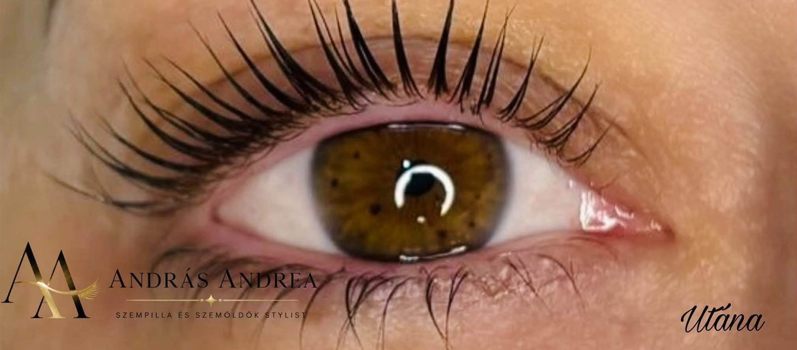
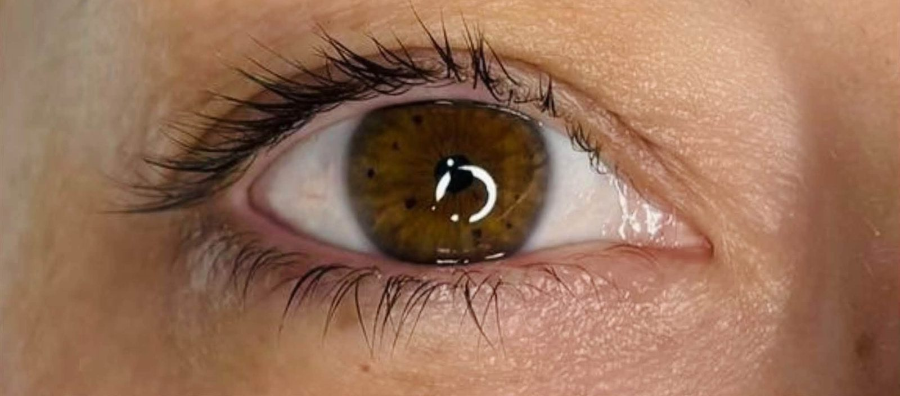
Szempilla
Szempilla lifting
A saját szempilláidat formázza: tőből megemeli és ívbe rendezi őket – műszempilla nélkül.
Ezt választom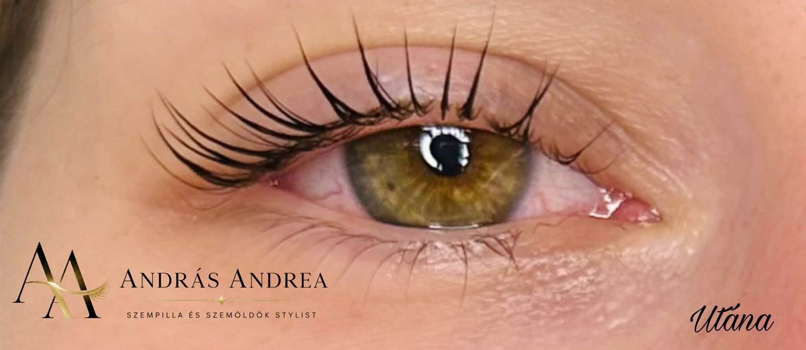
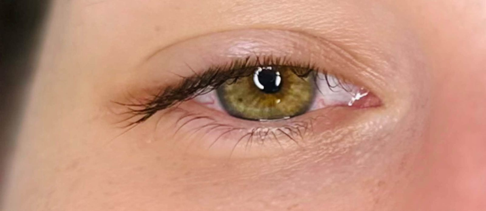
Szeretnéd kiemelni a természetes szépségedet?
András Andrea — szempilla és szemöldök stylist
Időpontot foglalok…hogy minden nap magabiztosabban nézhess a tükörbe.
András Andrea vagyok, szempilla és szemöldök stylist. [IDE JÖN: pár mondat rólad – a szakmai háttered, a képesítésed]
Új vendégeket is szeretettel várok.
A kezelések


Szempilla
A saját szempilláidat formázza: tőből megemeli és ívbe rendezi őket – műszempilla nélkül.
Ezt választom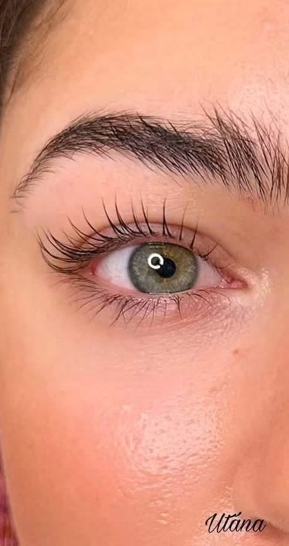
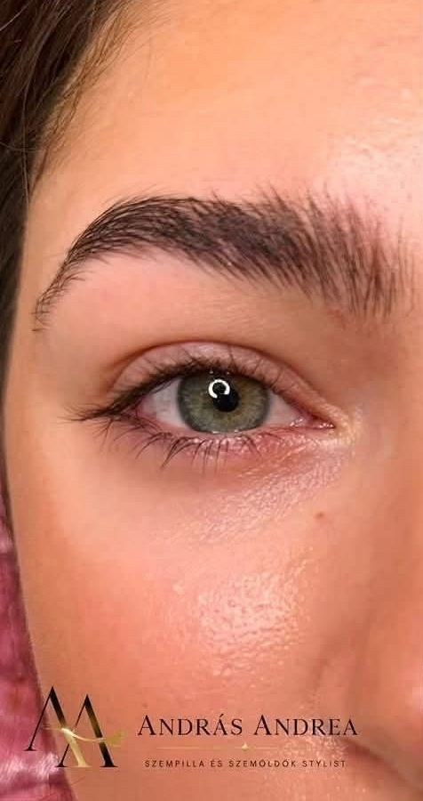
[ELLENŐRIZNI: koreai liftinggel készült ez a fotód? Ha nem, IDE JÖN: a saját koreai liftinges előtte–utána fotód]
Szempilla
A szempilla lifting egyik változata: a saját pillákat egészen a tövüktől, egyenletes ívben emeli meg.
[IDE JÖN: a saját szavaiddal, miben más a koreai lifting, mint a klasszikus]
Ezt választom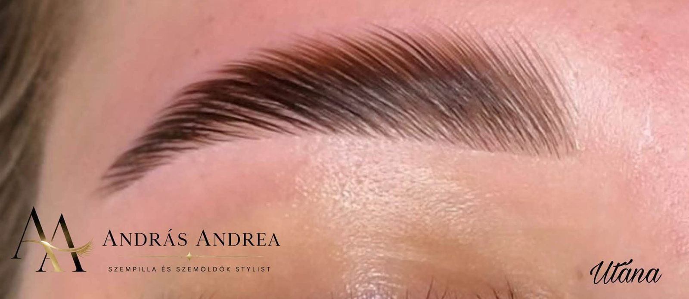
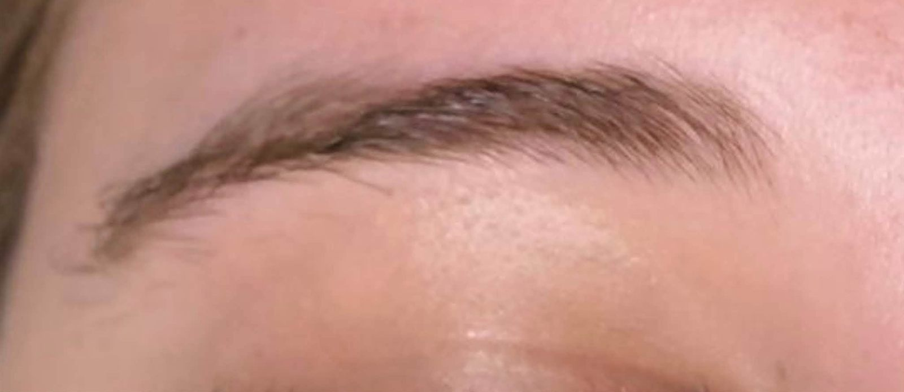
Szemöldök
A szemöldökszálakat egységes irányba rendezi és formában rögzíti, így a szemöldök rendezettebb, teltebb hatású.
Ezt választom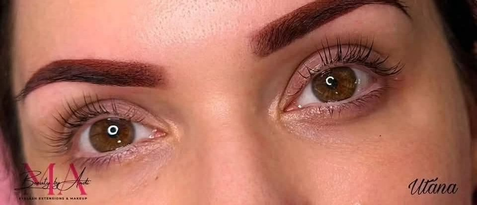
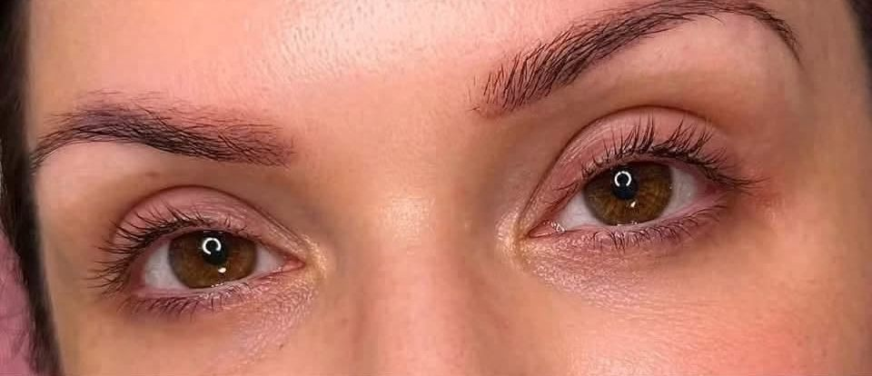
[ELLENŐRIZNI: airbrush festéssel készült ez a fotód?]
Szemöldök
A festéket finom permetként, airbrush technikával viszi fel, így színezi és kiemeli a szemöldök formáját.
Ezt választomTeszt · 2 kérdés
Neked ajánljuk
Ez csak kiindulópont – a végső javaslatot Andi adja meg személyesen.
Időpontfoglalás
Bemutató – az időpontok mintaként szerepelnek.
Vasárnap zárva. Hétköznap és szombaton várlak.
Már csak el kell küldened.
Andi üzenetben fogad bejelentkezést. Az üzenetet a vágólapra másoltam – nyisd meg az Instagramot vagy a Messengert, és illeszd be.
Galéria
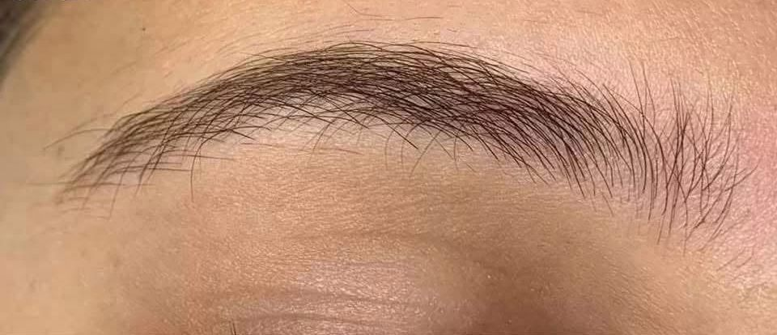
Előtte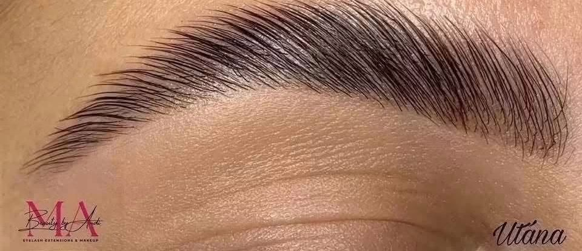
A stúdió
Bejelentkezés üzenetben – Instagramon vagy Facebook Messengeren.
ÚtvonaltervezésVárlak szeretettel!
Beauty by Andi